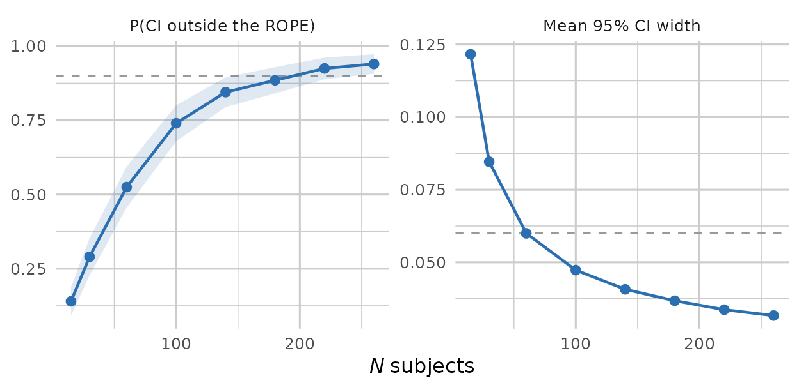

When sample sizes are large, or when the question of interest is whether an effect is practically meaningful, power against a point null is often the wrong target. pilotr implements a precision-based design analysis against a region of practical equivalence (ROPE). This is a fast, frequentist analogue of the Bayesian approach that compares a highest-density interval with a ROPE.
As in the power vignette, the fixed-N analysis below uses a small
n_simsso that the vignette builds quickly, and the sample-size sweep, which needs far more model fits, was precomputed with exactly the code shown and shipped with the package. For real planning we recommendn_sims >= 200, the value the sweep uses.
The idea
Over Monte Carlo replicates, and for each focal fixed effect, pilotr records the 95% confidence interval and whether it falls determinately outside the ROPE (the effect is practically meaningful) or entirely inside it (practical equivalence to zero), together with the expected interval width. The interval is a Wald approximation, the estimate plus or minus 1.96 standard errors, chosen for speed and for comparability across replicates. Sweeping sample size then locates the minimum N at which a focal effect reaches a determinate decision with a target probability.
A worked design
We reuse the crossed priming design, which represents a small priming effect on log reaction time.
spec_c <- build_spec(list(
name = "priming", seed = 1, design_kind = "within", include_items = TRUE,
n_subject = 24, n_item = 18,
factor_name = "condition", lev1 = "related", lev2 = "unrelated",
intercept = 6, effect = 0.05,
subj_int_sd = 0.12, subj_slope_sd = 0.04, subj_corr = 0.2,
item_int_sd = 0.08, item_slope_sd = 0.02, item_corr = -0.1,
family = "shifted_lognormal", resp_name = "RT", sigma = 0.3, shift = 200))So that the analysis can run from the specification alone, pilotr auto-derives the analysis model, including the contrast columns, the response transform and the mixed-model formula.
model_formula(spec_c)
#> .y ~ effect + (1 + effect | subject) + (1 + effect | item)The companion model_data() adds the other two
derivations to a simulated data set, the numeric effect
contrast column the formula’s terms refer to and the .y
response, here the log-transformed RT because the family is
shifted_lognormal.
head(model_data(spec_c, simulate_design(spec_c)))
#> subject item condition RT .y effect
#> 1 1 1 related 688.7993 6.191952 -0.5
#> 2 1 1 unrelated 778.3731 6.360219 0.5
#> 3 1 2 related 884.1392 6.528161 -0.5
#> 4 1 2 unrelated 788.8995 6.378256 0.5
#> 5 1 3 related 651.0253 6.111523 -0.5
#> 6 1 3 unrelated 518.3355 5.763106 0.5Precision at a fixed N
We declare the focal effect (its coefficient name and true value) and a ROPE half-width. Here the effect lives on the log scale, and we treat anything smaller than 0.02 as practically equivalent to zero.
pr <- precision_design(spec_c, focal = c(effect = 0.05), rope = 0.02, n_sims = 25)
pr
#> param true mean_ci_width p_meaningful p_equivalent n_converged
#> 1 effect 0.05 0.09424168 0.24 0 25The columns are interpreted as follows. p_meaningful is
the probability the 95% CI lands entirely outside the ROPE, a
determinate ‘meaningful’ decision. p_equivalent is the
probability it lands entirely inside, a determinate ‘equivalent’
decision. mean_ci_width is the expected precision.
Sweeping sample size
The same ROPE has to be carried into the sweep. Leaving
rope at its default would compare the interval against a
region as wide as the effect itself, and the decision probability would
then fall with N rather than rise.
prc <- precision_curve(spec_c, focal = c(effect = 0.05),
subject_ns = c(15, 30, 60, 100, 140, 180, 220, 260),
rope = 0.02, n_sims = 200)
prc[, c("n_subject", "p_meaningful", "p_equivalent", "mean_ci_width", "n_converged")]#> n_subject p_meaningful p_equivalent mean_ci_width n_converged
#> 1 15 0.140 0 0.12163610 200
#> 2 30 0.290 0 0.08462110 200
#> 3 60 0.525 0 0.05996175 200
#> 4 100 0.740 0 0.04732256 200
#> 5 140 0.845 0 0.04069929 200
#> 6 180 0.885 0 0.03678134 200
#> 7 220 0.925 0 0.03369284 200
#> 8 260 0.940 0 0.03166924 200As N grows the interval tightens and
p_meaningful rises, so the design reaches a determinate
decision more reliably. Reading the sweep for the smallest N
that meets a target of ‘p_meaningful ≥ 0.90’ puts this
design at around 220 subjects. That is a more informative criterion than
power against a point null, because it asks whether the study can
distinguish the effect from a negligible one rather than merely from
zero. Each estimate rests on 200 replicates, all of which converged, so
its Monte Carlo standard error is at most about 0.035, which the figure
below shows as a band.
p_equivalent stays at 0 throughout, and correctly so.
The true effect of 0.05 lies outside the ROPE by construction, so no
interval should ever land entirely inside it. The column earns its place
in designs where practical equivalence is the hypothesis of
interest.
library(ggplot2)
# Each probability is a proportion over the converged replicates, so it carries a binomial
# Monte Carlo standard error, and the band is its 95% interval. The two panels are on
# different scales, hence the free y axis.
prc$se <- sqrt(prc$p_meaningful * (1 - prc$p_meaningful) / prc$n_converged)
panels <- c("P(CI outside the ROPE)", "Mean 95% CI width")
long <- rbind(
data.frame(n_subject = prc$n_subject, panel = panels[1], y = prc$p_meaningful,
lo = pmax(0, prc$p_meaningful - 1.96 * prc$se),
hi = pmin(1, prc$p_meaningful + 1.96 * prc$se)),
data.frame(n_subject = prc$n_subject, panel = panels[2], y = prc$mean_ci_width,
lo = NA, hi = NA))
long$panel <- factor(long$panel, levels = panels)
# 0.90 is the target decision probability; 0.06 is the width at which a CI centred on the
# true effect just clears the ROPE, that is 2 * (0.05 - 0.02).
refs <- data.frame(panel = factor(panels, levels = panels), ref = c(0.90, 0.06))
ggplot(long, aes(n_subject, y)) +
geom_hline(data = refs, aes(yintercept = ref), linetype = 2, colour = "grey60") +
geom_ribbon(aes(ymin = lo, ymax = hi), alpha = .15, fill = "#2C6FB0", na.rm = TRUE) +
geom_line(colour = "#2C6FB0", linewidth = 0.8) +
geom_point(colour = "#2C6FB0", size = 2.2) +
facet_wrap(~ panel, scales = "free_y") +
labs(x = expression(italic(N) ~ "subjects"), y = NULL) +
theme_minimal(base_size = 12) +
# theme_minimal still paints a white plot.background over the transparent canvas, so both
# surfaces have to be cleared for the page colour to reach the figure.
theme(plot.background = element_rect(fill = NA, colour = NA),
panel.background = element_rect(fill = NA, colour = NA),
panel.grid = element_line(colour = "grey80"),
strip.background = element_rect(fill = NA, colour = NA))
The two panels answer the same question from either side. On the left, the dashed line marks the 0.90 target the sweep is read against. On the right it marks a width of 0.06, which is where a confidence interval centred on the true effect just clears a ROPE of 0.02, since the interval has to keep its lower limit above the ROPE and so must be narrower than 2 × (0.05 − 0.02). Width falls below that line well before the decision probability reaches 0.90, because an interval centred exactly on the true effect is the best case and sampling variation moves the centre about.
See also
The power vignette covers simulation-based power and Type S/M errors. The getting-started vignette covers the core simulate-and-inspect loop.